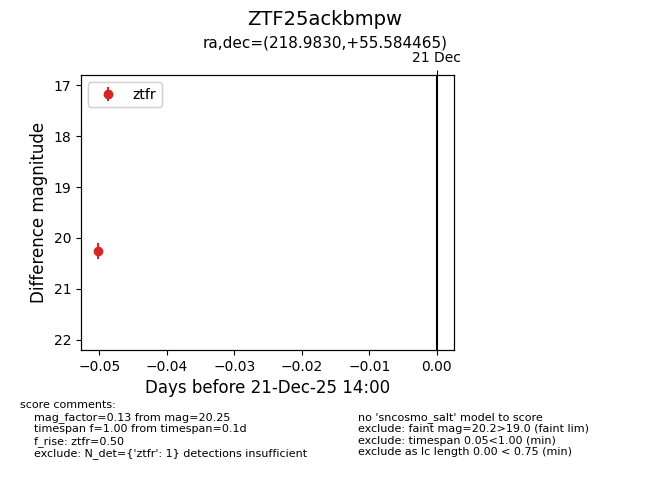
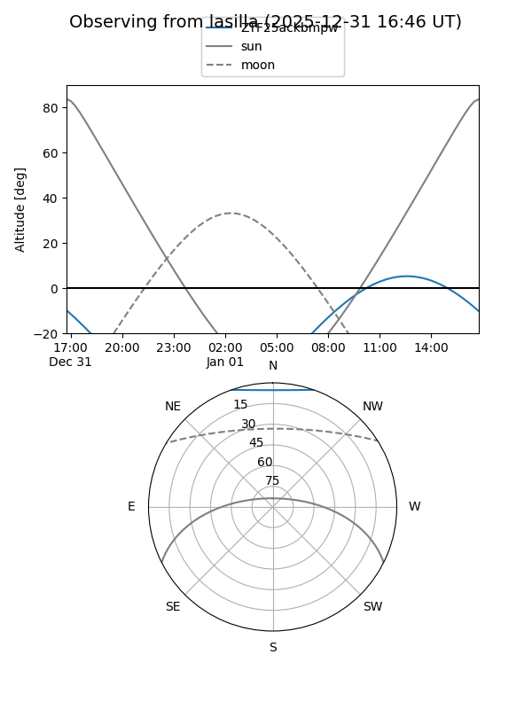
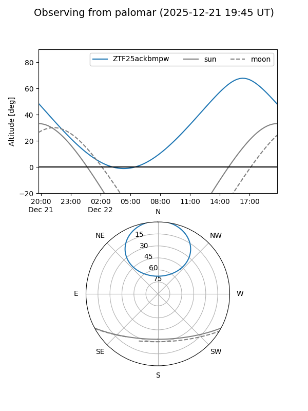

ZTF25ackbmpw
Target ZTF25ackbmpw at 2025-12-31 18:00
Aliases and brokers:
FINK: link
Lasair: link
ALeRCE: link
alt names
ZTF25ackbmpw (ztf,fink_ztf)
Coordinates:
equatorial (ra, dec) = 218.9830,+55.58446
equatorial (HMS+DMS) = 14:35:55.92,+55:35:04.07
galactic (l, b) = (96.5997,+55.87312)
Flags:
Photometry:
last ztfr=20.25
1 ztfr detections
Lightcurve

Visibility


Additional plots